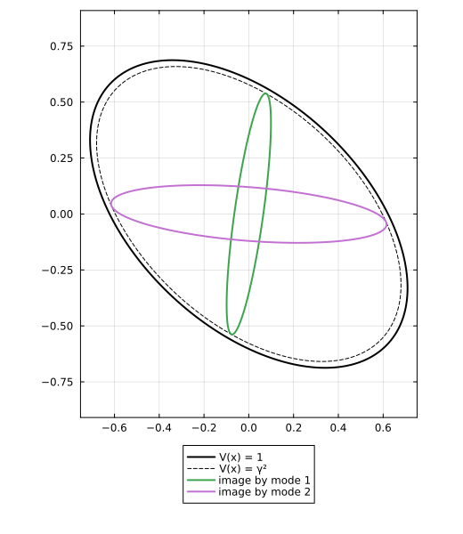
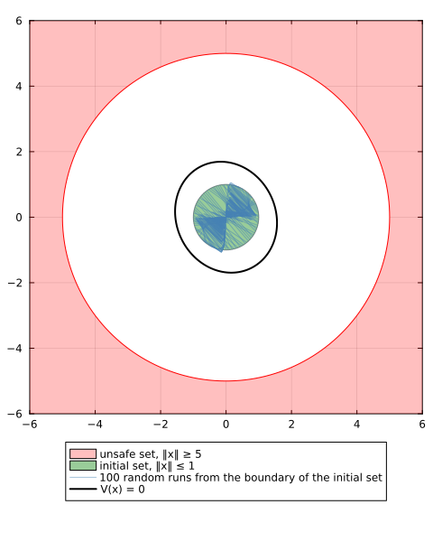
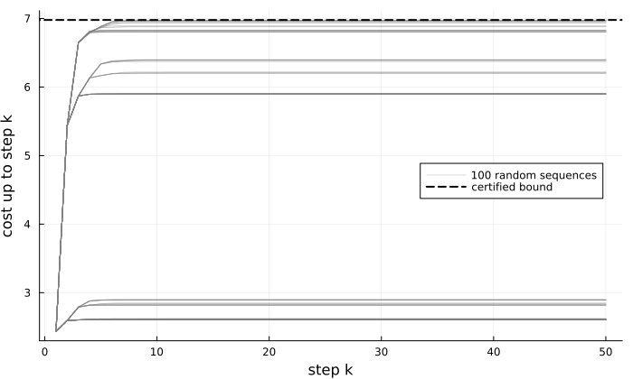

How a certificate works
certify(template, graph, problem) takes three arguments:
- the template: the family the node functions are drawn from;
- the graph: one node function per node, and one inequality per edge, between the functions of its two nodes;
- the problem, built from the system: what you want to prove, which sets the form of the inequalities and the objective.
The problem is given. The template and the graph are your two choices, and they decide both how good the certificate can be and how much it costs to compute. This page first explains the optimization problem they build, then the common function, which shows why a certificate holds for every switching sequence. It ends by certifying the three problems of the running example with the same template and graph.
The code on this page uses the running example of Systems and problems: system, controlled, the sets S0 and Su, and the costs Q and R, solved with Clarabel.
The template and the graph
The template here is QuadraticTemplate: the quadratic forms $V(x) = x^\top P x$, with $P$ symmetric; each problem adds its own conditions on $P$.
The graph is a directed graph whose edges carry modes: the edge $(a, b, i)$ goes from node $a$ to node $b$ and reads mode $i$. The certificate puts one function of the template at each node $a$, its node function $V_a$. The graph must be path-complete: every sequence of modes is read along some path of the graph. Here, common_graph has one node and a loop per mode, so the certificate is a single function.
template = PCC.QuadraticTemplate()
graph = PCC.common_graph(system)One optimization problem
certify solves one optimization problem, built from its three arguments:
\[\begin{aligned} \underset{V_a \in \mathcal{V},\ \theta}{\text{optimize}} \quad & J \\ \text{subject to} \quad & \mathcal{C}_i(V_a, V_b) && \text{for every edge } (a, b, i), \\ & \mathcal{N}(V_a) && \text{for every node } a. \end{aligned}\]
- The template $\mathcal{V}$ gives the variables: the parameters of one node function, such as the matrix $P$ of $x^\top P x$.
- The graph gives the structure: one copy of these variables per node, and one edge inequality $\mathcal{C}_i(V_a, V_b)$ per edge $(a, b, i)$.
- The problem gives the content: what each edge inequality says, the node conditions $\mathcal{N}$, the objective $J$, and its own unknowns $\theta$: the rate, the margin or the gains.
So for each edge inequality, the graph decides that it exists, the problem what it says, and the template how it is imposed. The inequality must hold for every $x$; the template turns it into finitely many convex constraints, and so decides the kind of program: semidefinite for quadratic forms, linear for polyhedral functions.
The template and the graph therefore decide:
- how good the certificate can be: it is the optimum of the program, the best that the functions of the template can give on the graph;
- how much it costs to compute: the template sets the kind of program and the size of each variable and constraint; the graph sets how many there are.
The two pull against each other: a template with more functions, or a graph with more nodes, can give a better certificate, but builds a larger program. For instance, the sum-of-squares template gives the quadratic forms at degree 1, and polynomials of higher degree beyond, with more variables at each degree.
For stability on the running example, the program has one quadratic form, so three parameters, and one $2 \times 2$ linear matrix inequality per mode. optimization_model builds the program without solving it.
The common function
The node functions combine into one function of the state, the common function
\[V(x) = \min_{P \in \mathcal{P}} \, \max_{a \in P} V_a(x),\]
where the sets of nodes $\mathcal{P}$ depend on the graph: the single nodes on a complete graph, so $V = \min_a V_a$; all the nodes at once on a co-complete graph, so $V = \max_a V_a$; the nodes of the observer_graph otherwise ((Philippe et al., 2019)). Choosing a graph defines complete and co-complete graphs. certificate(x) evaluates $V$.
Path-completeness turns the edge inequalities into one inequality on $V$, for every mode: $V$ is a classical certificate, one function for the whole system, though in general not one of the template.
Stability
The program:
\[\begin{aligned} \min_{V_a,\ \gamma} \quad & \gamma \\ \text{subject to} \quad & V_b(A_i x) \le \gamma^p \, V_a(x) \quad \forall x && \text{for every edge } (a, b, i), \\ & V_a \text{ positive definite} && \text{for every node } a, \end{aligned}\]
where $\gamma$ is the rate and $p$ the degree of the template: 2 for quadratic forms, 1 for norms. At a fixed rate the program is convex, so certify finds the smallest rate by bisection:
problem = PCC.StabilityProblem(system)
certificate = PCC.certify(template, graph, problem; optimizer = Clarabel.Optimizer)
certificate.rate0.9586944580078125The rate is an upper bound on the joint spectral radius ((Ahmadi et al., 2014), Thm. 2.4), below one, so the system is stable.
Why it holds. The common function satisfies $V(A_i x) \le \gamma^p \, V(x)$ for every mode $i$: it is a common Lyapunov function, so the state shrinks at least like $\gamma^k$, up to a constant factor, for every switching sequence. On a complete graph, for instance, take a node $a$ minimizing $V_a(x)$: the edge that leaves $a$ with mode $i$ ends at some node $b$, so $V(A_i x) \le V_b(A_i x) \le \gamma^p \, V_a(x) = \gamma^p \, V(x)$.
In a picture: each mode maps the level set $V(x) = 1$ inside the level set $V(x) = \gamma^2$.

Both images touch the dashed curve: at the smallest rate, the inequalities are tight. Reading a certificate shows how to find the tight edges.
Safety
The node functions are path-complete barrier functions ((Anand et al., 2024)), quadratic in $[x; 1]$: $V_a(x) = [x; 1]^\top P_a [x; 1]$, with $P_a$ symmetric, possibly indefinite. The program:
\[\begin{aligned} \max_{V_a,\ \varepsilon} \quad & \varepsilon \\ \text{subject to} \quad & V_b(A_i x) \le V_a(x) \quad \forall x && \text{for every edge } (a, b, i), \\ & V_a \le -\varepsilon \text{ on the initial set} && \text{for every node } a, \\ & V_a \ge \varepsilon \text{ on the unsafe set} && \text{for every node } a, \end{aligned}\]
where the margin $\varepsilon$ measures how well the functions separate the two sets. certify imposes the set conditions through the S-procedure, a sufficient condition:
problem = PCC.SafetyProblem(system, S0, Su)
certificate = PCC.certify(template, graph, problem; optimizer = Clarabel.Optimizer)
certificate.margin0.28238630378039326The margin is positive, so the system is safe.
Why it holds. The common function is negative on the initial set, positive on the unsafe set, and satisfies $V(A_i x) \le V(x)$ for every mode $i$: it is a common barrier function. Along a trajectory that starts in the initial set, $V$ stays negative, so the trajectory never reaches the unsafe set.
In a picture: the region where $V$ is negative contains the initial set and does not meet the unsafe set, and the runs that start on the boundary of the initial set never leave that region.

Optimal control
The node functions are quadratic forms $V_a(x) = x^\top P_a x$, and each node also carries a gain $K_a$ ((Ninite et al., 2026)). The program:
\[\begin{aligned} \max_{V_a,\ K_a} \quad & \textstyle\sum_a \log\det P_a^{-1} \\ \text{subject to} \quad & x^\top Q x + u^\top R u + V_b(A_i x + B_i u) \le V_a(x) \quad \forall x && \text{for every edge } (a, b, i), \\ & V_a \text{ positive definite} && \text{for every node } a, \end{aligned}\]
where $u = K_a x$ applies the gain of the source node. The objective, a measure of the size of the $P_a$, keeps the bound small. The edge inequality is convex only after the change of variables $S_a = P_a^{-1}$, $Y_a = K_a S_a$.
certify returns the gains, which define the policy of the certificate: at each state $x$, apply the gain $K_a$ of the node $a$ whose function is smallest at $x$. Calling the certificate at a state gives the bound on the cost of this policy from it:
problem = PCC.OptimalControlProblem(controlled, Q, R)
optimizer = JuMP.optimizer_with_attributes(Clarabel.Optimizer,
"chordal_decomposition_enable" => false)
certificate = PCC.certify(template, graph, problem; optimizer)
certificate([1.0, 1.0])6.978006090693552From $(1, 1)$, the policy costs at most this bound, whatever the switching.
Why it holds. Here the graph must be complete, with an edge for every mode out of every node, which is stronger than path-complete; the one-node graph is, with its loop for every mode. The common function is then the minimum $V = \min_a V_a$, and at $x_k$ the policy applies $u_k = K_a x_k$, with $a$ attaining it. Whatever mode occurs, an edge leaves $a$ with it, and its inequality bounds the stage cost by $V(x_k) - V(x_{k+1})$. Added up, the stage costs are at most $V(x_0)$, for every switching sequence: $V$ bounds the worst-case cost of the policy, and so also the best worst-case cost that any policy can achieve.
In a picture: the cost of the policy along 100 random sequences, from $(1, 1)$, stays below the certified bound.

Next
The template and the graph are your two choices: see Choosing a template and Choosing a graph. Then Reading a certificate explains what certify returns. Not every combination is supported: see What works with what.